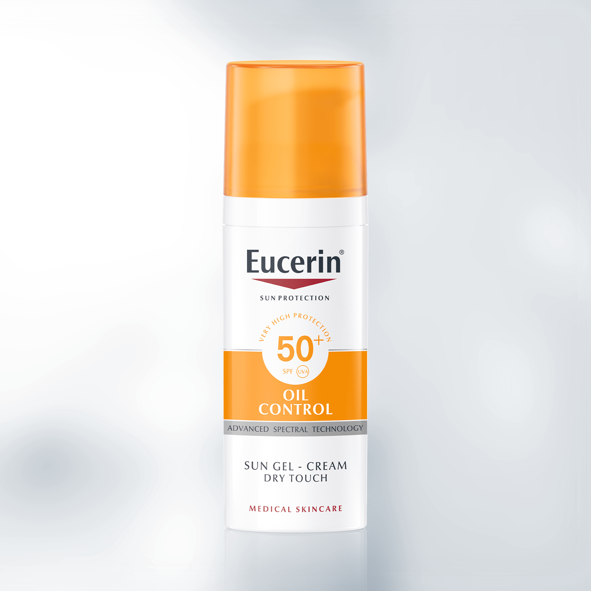

Eucerin
Eucerin tinted sunscreen cream for all skin types, non-greasy, protects the skin from harmful ultraviolet rays with SPF 50+ - 50 ml. It is a tinted sunscreen cream with a non-greasy texture, suitable for all skin types. UV damage.
Eucerin tinted sunscreen cream for all skin types, non-greasy, protects the skin from harmful ultraviolet rays with SPF 50+ - 50 ml. It is a tinted sunscreen cream with a non-greasy texture, suitable for all skin types. UV damage.
American Vixa capsules contain vitamins and effective natural substances, as this combination contributes to reducing the symptoms of insulin resistance in the body.
Glucophage contains the active substance metformin, which is an anti-hyperglycemic drug used to treat type 2 diabetes.
Mild to moderate pain relief. Relieving period pain, relieving symptoms of dysmenorrhea. Reducing heat and fever. Reduce inflammation.
And Orphenadrine 35 mg of muscle relaxants, as it works to remove muscle spasm, cramps and pain of skeletal muscles, and tension headaches, and Muscadol reduces high temperature.
Uriage Hysiac lotion is specially formulated for oily skin type. This gel removes impurities and excess sebum. For cleansing oily and acne-prone skin